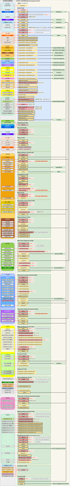
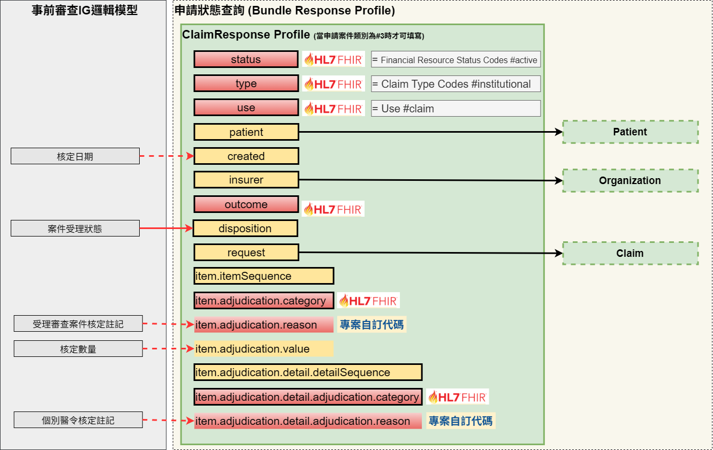
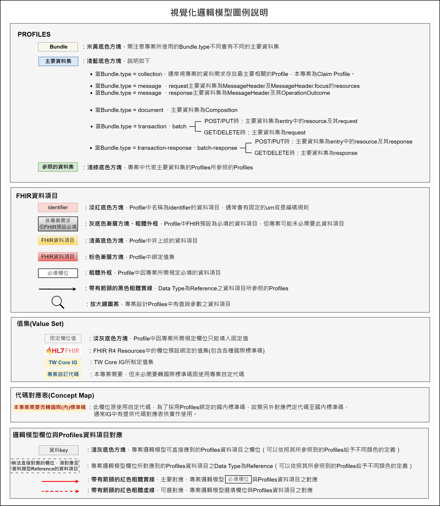

臺灣健保癌症用藥事前審查實作指引 - Downloaded Version 1.0.6 See the Directory of published versions
視覺化邏輯模型
癌藥事前審查之Bundle架構(Bundle Applying)
癌藥事前審查申請透過Bundle打包以下資料(相關對應表可以參照申請(Apply)癌藥事前審查之資料模型中的
Mappings)：
- 事前審查-Bundle TWPAS
- 事前審查-Claim TWPAS
- 醫事機構-Organization TWPAS
- 基因檢測機構-Organization Genetic Testing TWPAS
- 就醫科別-Encounter TWPAS
- 病人資訊-Patient TWPAS
- 影像報告-DiagnosticReport Image TWPAS
- DICOM影像-ImagingStudy TWPAS
- 非DICOM影像-Media TWPAS
- 癌症分期量表-Observation Cancer Stage TWPAS
- 檢查報告-DiagnosticReport TWPAS
- 基因資訊-Observation Diagnostic TWPAS
- 檢驗檢查-Observation Laboratory Result
- 病人狀態評估-Observation Patient Assessment TWPAS
- 用藥品項-MedicationRequest Treat TWPAS
- 放射治療-Procedure TWPAS
- 放射治療總劑量-Substance TWPAS
- 文件參照-DocumentReference
- 治療後疾病狀態評估-Observation Treatment Assessment TWPAS
- 事前審查品項-MedicationRequest Apply TWPAS
- 自主審查報備-ClaimResponse Self Assessment TWPAS
- 醫事人員-Practitioner TWPAS
- 健保事前審查計畫-Coverage
- 臺灣核心-政府機構（TW Core Organization Government）
Bundle架構圖

癌藥事前審查回覆之Bundle架構(Bundle Response)
Bundle架構圖

圖例說明圖
